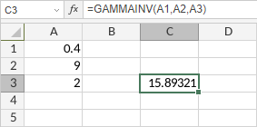

GAMMAINV funkcija
Funkcija GAMMAINV je jedna od statističkih funkcija. Koristi se za vraćanje inverzne kumulativne gama distribucije.
Sintaksa
GAMMAINV(probability, alpha, beta)
Funkcija GAMMAINV ima sledeće argumente:
| Argument | Opis |
|---|---|
| probability | Verovatnoća povezana sa gama distribucijom. Numerička vrednost veća od 0, ali manja od 1. |
| alpha | Prvi parametar distribucije, numerička vrednost veća od 0. |
| beta | Drugi parametar distribucije, numerička vrednost veća od 0. Ako je beta 1, funkcija vraća standardnu gama distribuciju. |
Napomene
Kako primeniti funkciju GAMMAINV.
Primeri
Slika ispod prikazuje rezultat koji vraća funkcija GAMMAINV.
